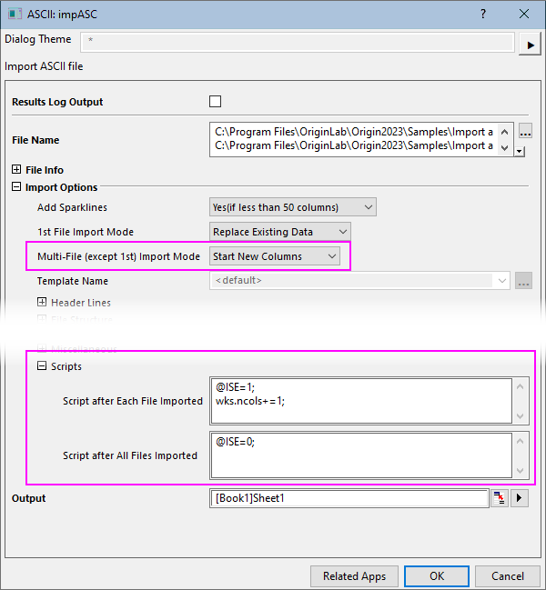

FAQ-1155 Wie importiere ich mehrere Dateien in ein Blatt und trenne jede Datei mit einer leeren Spalte?
import-multiple-files-to-sheet
Letztes Update: 04.11.2022
Dies sollte mit allen von Origins X-Funktions-Importroutinen funktionieren (Daten: Aus Datei importieren), solange der Dialog über einen Knoten Skripte verfügt (impASC ist abgebildet).
-
- 
- Wählen Sie Ihre Importroutine unter Daten: Aus Datei importieren.
- Stellen Sie sicher, dass Sie für Mehrere Dateien importieren die Option Neue Spalten öffnen für jede importierte Datei festlegen.
- Erweitern Sie den Knoten Skripte und geben Sie im Feld Skript nach jeder importierten Datei Folgendes ein:
@ISE = 1; wks.ncols+ = 1;
- Geben Sie im Feld Skript nach allen importierten Dateien Folgendes ein:
@ISE = 0;
(Dies setzt die Systemvariable @ISE zurück auf ihren Standardwert).
- Wenn Sie andere Importoptionen nach Bedarf festgelegt haben, klicken Sie im Dialog auf OK. Dies sollte jede Datei in das gleiche Blatt importieren, wobei die Daten jeder Datei durch eine leere Arbeitsblattspalte getrennt werden.